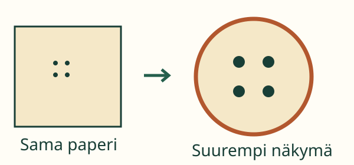
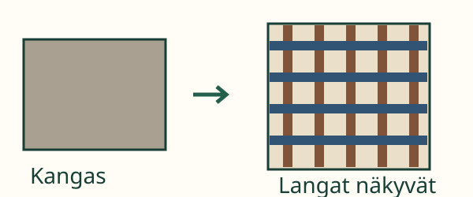

Loikka näkee paperissa pienen kuvion. Miten sen voisi nähdä tarkemmin?
Loikka näkee paperissa pienen kuvion. Miten sen voisi nähdä tarkemmin?
Loikka näkee paperissa pienen kuvion. Miten sen voisi nähdä tarkemmin?
Tavoitteesi: Harjoittelet kohdistamaan suurennuslasin ja etsimään selkeän näkymän.
Aikuisen kanssa: pane tuttu paperi pöydälle. Katso sitä ensin ilman suurennuslasia. Ota ehjä suurennuslasi luvan saatuasi. Pidä sitä paperin yllä. Liikuta hitaasti, kunnes kuva näkyy selvästi.

Jos kuva on sumea, siirrä lasia vähän lähemmäs paperia tai kauemmas siitä. Pysähdy katsomaan, kun yksityiskohdat erottuvat.

Myös tutun kangaspalan lankoja voi tutkia samalla tavalla. Ensin katsotaan ilman lasia, sitten lasin läpi. Tarkasteltava kohta pidetään samana.
Ennusta: Auttaako tarkka lasi, jos katsot sillä aivan eri kohtaa kuin aioit?
Ei siihen kysymykseen. Sekä kohdan että näkymän täytyy olla sopiva.
Tämä on yksinkertainen kuvamalli. Oikean suurennuslasin sopiva etäisyys voi olla erilainen.
Etsi ensin tehtävän kirjain paperista. Siirrä lasi siihen. Muuta sitten etäisyyttä vähän kerrallaan. Tarkkaile, milloin kuvan pienet merkit erottuvat.
Kaikkiin kysymyksiin ei auta suurennuslasi. Kun haluat verrata pituuksia, esineet voi ensin asettaa vierekkäin. Kun haluat nähdä pienen yksityiskohdan, suurennuslasi sopii.
Luokat 1–2. Tavoite on yksinkertaisen tutkimus- tai mittausvälineen käyttäminen; tässä valittu tutkimusväline on suurennuslasi. Vaadittu SCI-ENV-SAFE-01 on käytännön safety_gate, ei väite käsitteellisestä esitietolukosta. SCI-ENV-OBSERVE-01 on vahva tuki. Nimiä, kirjainten järjestystä, mittayksiköitä tai laskuja ei edellytetä; A/B ovat valmiit kohdemerkit, joita voi osoittaa.
Käytä sisällä pöydällä ehjää, ikään sopivaa käsisuurennuslasia ja aikuisen hyväksymää paperia tai kangasta. Älä suuntaa lasia aurinkoon. Todellinen väline, katseluetäisyys ja näkö vaikuttavat tulokseen. Mallin kolme etäisyyskohtaa ja näönvarainen sumennus ovat opetuksellisia merkkejä, eivät optinen simulaatio. Tekstivastine kertoo näkymän; se on tukea. Ruututoiminta ei todenna käsittelytaitoa, näkemistä tai fyysistä turvallisuutta. Vastauksia ei tallenneta.
Lähtökysymys: Mitä kahta asiaa säädät, kun haluat tutkia juuri tiettyä pientä kohtaa?
Kohdistan lasin oikeaan kohtaan ja etsin etäisyyden, jolla näen selvästi.